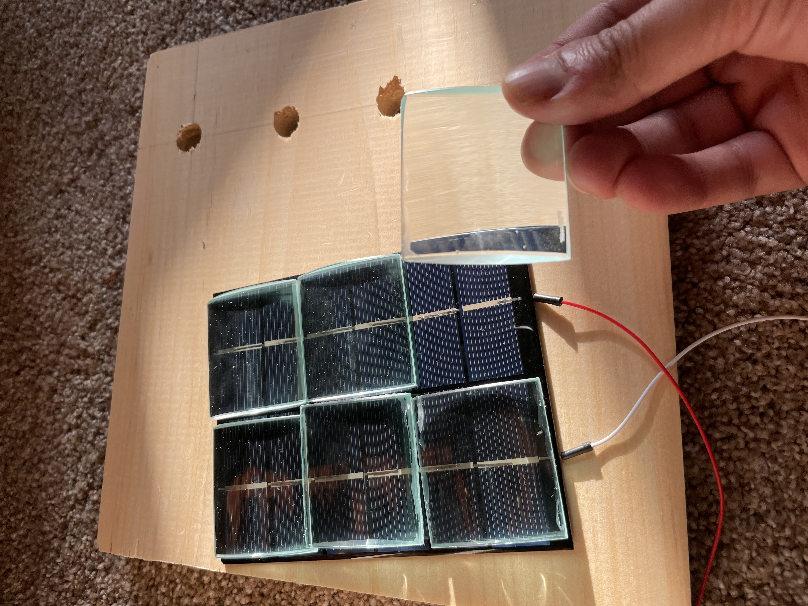

The core idea was to create a "3D solar panel" to capture more light at a given time in order to generate more power.
Solar panels as they currently exist capture light along a 2D plane and are limited by a property called "insolation." Insolation is the power in an area that is given off by the sun (or more generally, any light source). This is a fixed property. The insolation of the sun is 1040 W/m^2. This means that even with a 100% efficient solar panel, one could not ever generate more than 1040 W/m^2.
Photons from the sun don't travel in two dimensions, though, they travel through space in three dimensions. What if we could take advantage of this? Hypothetically, we would be able to generate more energy with a smaller surface area.
The first issue with developing a "three-dimensional solar panel/solar cell" is that if you turn the panel parallel to a ray of light, the panel can not absorb any of the light. Thus, we need a method of redirecting the light to be perpendicular to the panel. In devices like iPads, Kindles and some laptops, there is a a portion of the device called a backlight. When you start your device up, it often gives a white screen. This is the backlight. This backlight is composed of a light guide and several LEDs. The LEDs are actually only at the edges of the light guide. The light guide redirects the light perpendicular, out the face of the light guide, which is what illuminates the white start screen of a Kindle or iPad. What if we used this for sunlight?
While some sunlight does get through the light guide, it would be better if we could concentrate sunlight to hit the edge more directly. We used what is known as a "linear cylindrical lens." Much like a magnifying glass concentrates light to a point, linear cylindrical lenses concentrate light into a line.
Finally, we need an enclosure to hold all of these components together. For the sake of experimentation, we wanted to compare one flat solar panel, generating power as is commonly seen, against a stack of panels. The surface area of the control solar panel should be the same as the surface area of linear lenses . This way, we can see which generates more power - the control panel or the solar stack.
While the device works, it wasn't as effective as initially hoped to be. We used a measure we dubbed "energy density," or watts per meter squared. The solar box did not generate more energy than the control solar panel, but if you calculated how many watts per square meter the solar panel generated and compared that against the watts per square meter the box generated, you can see the box had a higher energy density.
Let's break this down a little. Generally, we measure the power outputted from a single solar cell by measuring the current and the voltage and multiplying the two values with the familiar equation P = IV. Given that the solar panel will have a larger surface area exposed to the sun, it makes sense that the raw power generated will be higher. So to account for this, we divided the power generated by the total surface area exposed to the sun, a measure we called "energy density."
Our tests did not include a Fresnel lens in these experiments. We instead exposed the edge of the light guide directly to the sun. We had 3mm and 5mm thick light guide plates, so our control group was a plain solar cell and our two experimental groups were 3mm and 5mm thick LGP groups. The chart shows the data collected. You can see that while the power is lower for the "simple stacks," the energy density is higher since the area exposed to the sun is much lower. The following figure illustrates the difference in energy densities between the control and the experimental group. On average, there was a 72.8% increase in energy density in the experimental group which used the 5mm LGP.
We also tested the resulting energy densities when using different thicknesses for the LGPs. The following data shows the average energy density for a control solar cell, a 5mm thick LGP and a 3mm thick LGP. You can see that the 3mm thick LGP in fact did result in a higher energy density, with roughly 121% higher energy density than the control solar cell. This is encouraging in that it shows that there is surprising gains to be made with the slightest of optimizations, but also discouraging in that the density increases we hoped for seem to be relatively far off.
A major issue we've uncovered through these experiments is how unoptimized the LGPs can be. Most of the LGPs were purchased from overseas suppliers. LGPs are generally designed for the electronics industry and designed to intake light from white LEDs which differs from sunlight in sseveral ways (including spectra, luminosity and intensity). While a few custom LGPs were designed, it's difficult to evaluate their efficacy with home lab equipment. A personal greivence was that most of these LGPs were sized larger than the solar cells, so even if they were perfectly efficient there would still be large losses. The gravest issue though, was the LGPs were not remotely close to efficient. In the following graph, we graphed the light emitted out of the face of an LGP as we moved a photosensor down the length of the LGP. This graph shows a steep drop off in light emitted, meaning the solar cells are only getting partial illumination. This actually decreases the performance of the solar cells worse than even but dim light, since power produced by a solar cell drops nonlinearly with uneven illumination.
There are promising findings that show there are efficiency gains left on the table, if solar cell designers could include more optical elements and consider different orientations and designs rather than lay solar panels flat towards the sun. Both this idea and traditional solar panels could also benefit from tracking systems. There are many more optimizations available for this idea, including specially designed LGPs, material selection, and solar cell selection (maybe even possibly providing the necessary housing to commercialize peroskovite cells). But despite the potential efficiency gains, proving the idea can generate enough energy to be commercially viable is still far off and uncertain. While densities did increase, to generate equivalent power would require, at one estimation, roughly 20 solar cells and 10 LGPs. This is obviously not a worthwhile investment.
Still, while it remains to be realized, I hope this project shows the potential of integrating solar cells and optical elements with a little bit of clever design. I wished to show an alternate research path besides the material science game of engineering high efficiency solar cells, and I believe this prototype demonstrates such a research path.
If you are further interested, please read the patent here.